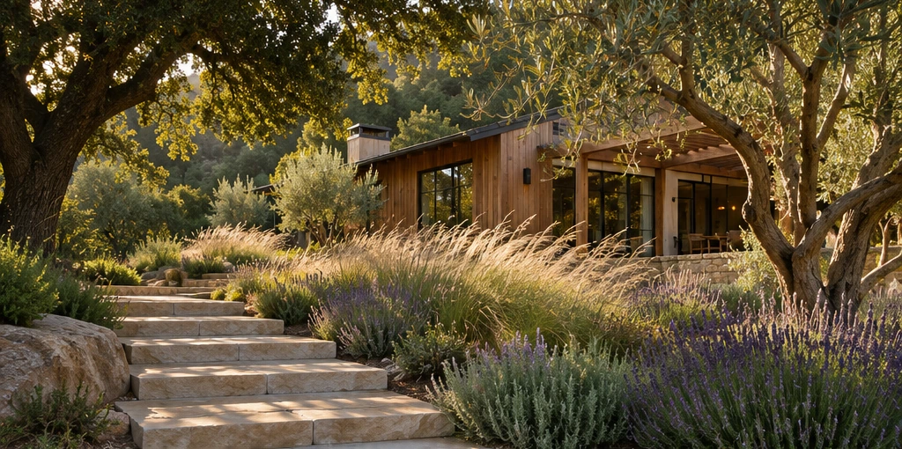
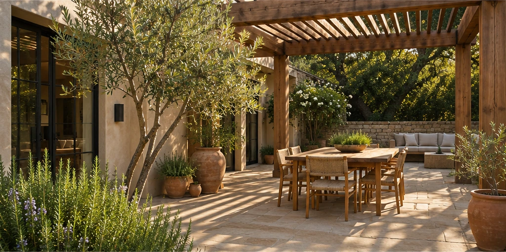
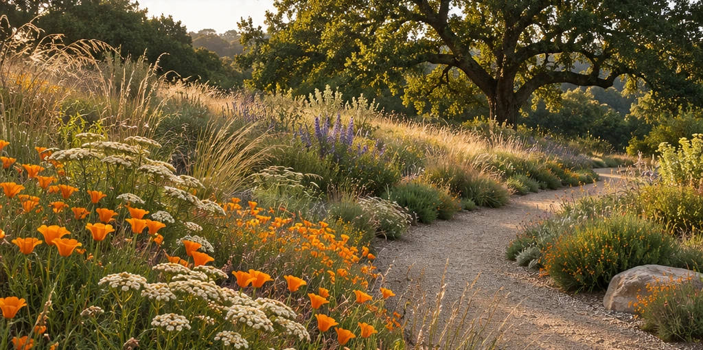

Terraced garden

Landscape design & build
At home,
outdoors.
Gardens, stonework and outdoor rooms shaped around the way you live.
Garden tours
View more
Outdoor dining
The Dining Courtyard
Woodland & water
The Forest House
The values of Century Landscapes
What we do
From the
ground up.
Every outdoor space has a living side and a built side. Good design brings the two together.
Landscape design
Plan where the shade falls, how people move through the garden, and what you want to see from inside. Those choices guide the layout and planting palette.
Landscape construction
Stone steps, walls, paths and terraces give a garden its shape. Materials, changes in level and drainage need to work together from the start.
Outdoor living
Make room for the things you already love doing. A shaded table near the kitchen, a reading bench or an evening gathering spot can anchor the whole plan.

Our approach
How a garden
takes shape.
Walk the site
Start with the slope, the sun, the trees worth keeping and the way you use your yard.
Draw the plan
Work out the paths, planting and materials, then review the scope before the build.
Build and plant
Set the levels and stonework first. Bring in soil, irrigation and planting as each area is ready.
Walk it together
Review the finished space and talk through watering and care as the garden settles in.

Common questions
What should I bring to a first conversation?
A few photos, rough measurements and a short wish list are a good start. Include anything you want to keep, such as a mature tree or a favorite view.
Can the garden be built in stages?
A whole-site plan can account for future phases. Think about access, drainage and irrigation early so the first phase leaves room for the next.
What affects the project budget?
Site access, changes in grade, the size of paved areas and material choices all shape the estimate. Add your priorities and a comfortable budget to your brief.